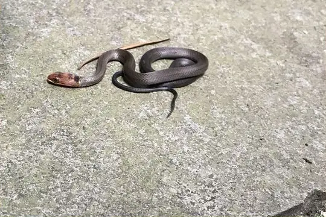
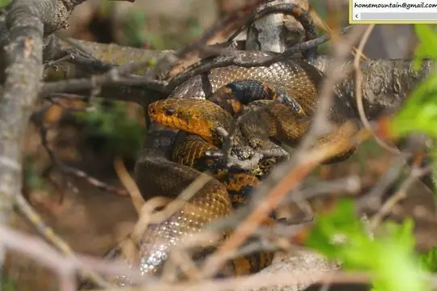

Snakes of South Korea
6 snake species are recorded in South Korea in SnakeList: 2 venomous and 4 non-venomous, from 3 families.
- 6species
- 2venomous
- 4non-venomous
- 3families
These totals count the snakes SnakeList records as living in South Korea. A species counts if it is recorded anywhere in the country, so not every snake lives in every region.
Species
Showing 6 species

Chinese Many-tooth SnakeSibynophis chinensis Chinese Sea SnakeLaticauda semifasciata
Chinese Sea SnakeLaticauda semifasciata Dione SnakeElaphe dione
Dione SnakeElaphe dione Japanese KeelbackHebius vibakari
Japanese KeelbackHebius vibakari
Korean RatsnakeElaphe anomala Short-tailed Pit ViperGloydius brevicauda
Short-tailed Pit ViperGloydius brevicauda
No snakes in South Korea match.
South Korea’s snakes in numbers
- Families: Colubridae 4, Elapidae 1, Viperidae 1.
States and provinces
The states and provinces where SnakeList records snakes, with how many species each has. Each page has its families, venomous snakes, the species found only there, its cities and neighbours.
- Daejeon 2 species
- Gangwon 2 species
- Gyeonggi 2 species
- Incheon 1 species
- Jeju 3 species
- North Chungcheong 2 species
- North Gyeongsang 2 species
- North Jeolla 2 species
- Sejong 1 species
- Seoul 1 species
- South Chungcheong 2 species
- South Gyeongsang 2 species
- South Jeolla 2 species
No place matches that.
Cities
Its biggest cities, biggest first. Snakes are recorded by state or province, not by city, so each city page shows the snakes of the state or province it is in.
- Seoul Seoul
- Busan South Gyeongsang
- Incheon Gyeonggi
- Daegu North Gyeongsang
- Daejeon Daejeon
- Gwangju South Jeolla
- Suwon Gyeonggi
- Goyang-si Gyeonggi
- Seongnam-si Gyeonggi
- Ulsan North Gyeongsang
- Bucheon-si Gyeonggi
- Jeonju North Jeolla
- Ansan-si Gyeonggi
- Cheongju-si North Chungcheong
- Anyang-si Gyeonggi
- Changwon South Gyeongsang
- Pohang North Gyeongsang
- Uijeongbu-si Gyeonggi
- Hwaseong-si Gyeonggi
- Masan South Jeolla
- Jeju City Jeju
- Cheonan South Chungcheong
- Kwangmyŏng Seoul
- Kimhae South Gyeongsang
- Chinju South Gyeongsang
No place matches that.